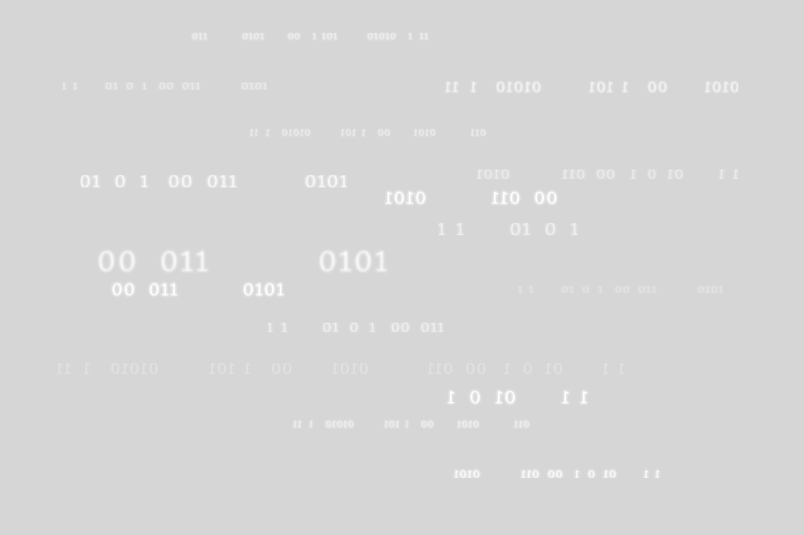

Probleme de informatica
wrapper
left
Medium
Hard
Populare acum
-
#834
Se da un numar natural n (n<=5) si 2*n numere naturale cu cel mult 3 cifre fiecare reprezentand inaltimile in centimetri a 2*n soldati. Sa se aranjeze soldatii pe doua randuri a cate n soldati fiecare astfel incat fiecare soldat inafara de primul de pe rand sa aiba in stanga un soldat mai inalt decat el si fiecare soldat de pe randul 2 sa aiba in fata un soldat mai inalt decat el. -
#393
Problema rucsacului (cazul continuu) O persoana are un rucsac cu care poate transporta o greutate maxima g. Persoana are la dispozitie n obiecte pentru care stie greutatea si castigul obtinut daca transporta obiectul. Fiecare obiect poate fi transportat integral sau taiat. Sa se precizeze ce obiecte alege persoana si in ce proportie le ia astfel incat castigul total sa fie maxim si sa nu se depaseasca greutatea maxima a rucsacului.
-
#823
Cei n elevi dintr-o clasa au dat proba de rezistenta la ora de sport. Profesorul a intocmit un tabel cu cei en elevi si pentru fiecare dintre i: - numele si prenumele - rezultatul exprimat in minute si secunde Exista un barem de trecere a probei, dat la final in minute si secunde Afisati elevii care au trecut baremul in ordine crescatoara dupa rezultat, iar la rezultate identice, alfabetic dupa nume si prenume. Fiecare elev se afiseaza pe cate o linie prin nume, prenume si timpul obtinut la proba. Numarul de elevi din clasa este cel mult 30. Un elev trece baremul daca timpul sau este mai mic sau egal cu baremul.
-
#347
Definiti un tip de date pentru memorarea lungimii si latimii unui dreptunghi. Cititi un numar natural n si apoi n perechi de numere intregi reprezentand n dreptunghiuri. a) Afisati laturile dreptunghiului cu arie maxima. b) Afisati laturile dreptunghiului cu perimetrul minim.
-
#871
Se citeste un numar natural n. Afisati toate tripletele de numere naturale x, y, z (1<x<y<z<n) care sunt divizori ai lui n si care au proprietatea ca x+y+z=n.Programul va afisa pe ecran pe randuri separate cate un triplet conform cerintei, numerele din triplet fiind in ordine strict crescatoare si separate prin cate un spatiu. Daca nu exista nici un astfel de triplet, atunci se va afisa pe ecran nu exista.
-
#648
Se citeste un numar natural n si apoi n numere naturale nenule cu cel mult 5 cifre fiecare. Afisati fractia ireductibila minima care se poate construi folosind numere dintre cele citite.
-
#597
Din fisierul date.in se citeste un numar natural k si apoi de pe a doua linie numere intregi. Contruiti o lista liniara simplu inlantuita care sa contina numerele intregi citite in ordinea din fisier. Permutati lista cu k pozitii spre stanga si afisati valorile din lista. Indicatie: se vor scrie si folosi functii pentru adaugarea unei valori la sfarsitul listei si pentru stergerea primului nod al listei si vor fi folosite pentru permuarea ceruta.
-
#66
Se considera o lista liniara simplu inlantuita care memoreaza valori intregi. Sa se scrie o functie care primeste ca parametru adresa primului nod al listei si insereaza in fata fiecarui nod care memoreaza o valoare negativa un nod care sa memoreze opusul acesteia.
-
#842
Din fisierul text.in se citeste un text aflat pe mai multe linii si care este format din litere ale alfabetului englez, caractere spatiu si NewLine. In fisierul text.out se va afisa textul initial in care toate cuvintele de lungime maxima vor fi inlocuite cu inversul (oglinditul) lor. Restul cuvintelor si arangarea lor pe linii vor ramane neschimbate. Numarul total de caractere din fisier este cel mult 5000.